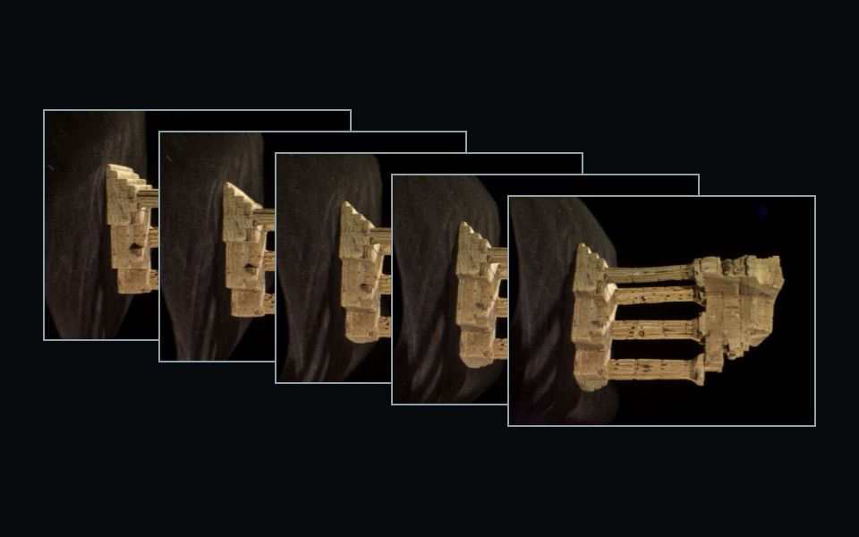

47 photos in.
A temple out.
Classical structure from motion, written from scratch in Python. Ordinary overlapping photos become a 3-D point cloud and the position of every camera that took them, and the result is checked against ground truth.
- Cameras recovered
- 47 / 47
- Points
- 9 907
- Rotation error, median
- 0.15°
- Reprojection, median
- 0.13 px
How the temple was made
-
Photograph the object from all round.
Middlebury's templeRing: 47 photos of a plaster temple on a ring of viewpoints, each overlapping its neighbours. The camera's focal length comes from a calibration file, EXIF data, or a guess that bundle adjustment later refines.
-
Find points worth following.
SIFT finds distinctive corners and blobs in each photo: 1 494 in this one, each with a 128-number descriptor of the texture round it. Dark or flat photos get a lower contrast threshold automatically.
-
Match them, then keep only what the geometry allows.
Descriptors are paired across photos (Lowe's ratio test, both directions), then a robust fit of the essential matrix throws out pairs no single camera motion can explain: 947 of 952 survive between these two neighbours.
-
Solve the cameras, one at a time.
Two photos give the first relative pose and the first 3-D points. Every further camera is placed by PnP against the points it sees, and bundle adjustment refines all cameras, points and the focal length together: 47 cameras on the ring.
-
Keep the points you can trust.
Points seen in too few views, with large reprojection error or far from their neighbours are filtered out, leaving 9 907 coloured points. An optional dense stage adds stereo depth maps and a mesh.

How it is built
A pipeline of small stages, each tested against synthetic and rendered scenes with known cameras before it ever saw a real photo. The geometry is our own; OpenCV, SciPy and Open3D provide the numerical building blocks, labelled where they are used.
- Load and checkdecode, reject blur and duplicates, resolve intrinsicsours
- FeaturesSIFT, strict strongest-N cap, adaptive thresholdSIFT: OpenCV
- Matching2-NN, ratio test, mutual check, pair selection2-NN: OpenCV
- Verificationessential or fundamental matrix, Sampson inliers, refinementUSAC: OpenCV
- First pairpose from E, cheirality, triangulationours
- Incremental SfMtracks, next-best view, PnP, relative-pose fallbackPnP: OpenCV
- Bundle adjustmentexact sparse Jacobian, soft-L1, shared focal lengthsolver: SciPy
- Filter and exporttrack, reprojection and outlier filters; PLY, cameras, reportoutlier removal: Open3D
This page and the workstation
How well it works
Camera positions recovered from the photos alone, aligned to each benchmark's ground-truth cameras by a similarity transform. COLMAP, the reference structure-from-motion system, ran on the same images with the same starting calibration.
| Scene | Cameras | Rotation error median | Points | COLMAP (external) |
|---|---|---|---|---|
| templeRing Middlebury, 47 photos | 47 / 47 | 0.15° | 9 907 | 47 / 47 · 0.26° |
| dinoRing Middlebury, dark, 48 photos | 48 / 48 | 0.15° | 3 462 | 24 / 48 · 23.4° |
| pipes ETH3D, 14 DSLR photos | 14 / 14 | 0.06° | – | 11 / 14 · 0.08° |
| office ETH3D, 26 photos, low texture | 26 / 26 | 0.14° | – | 26 / 26 · 0.24° |
| dinoSparseRing 16 widely spaced photos, learned features | 16 / 16 | 0.21° | – | 6 / 16 · 0.54° K fixed |
From the experiments in docs/experiments.md (E6, E7, E9). The last row uses the optional DISK + LightGlue features (external, via kornia); with SIFT that scene registers 6 of 16.
Measured on Middlebury templeRingdinoRingdinoSparseRingETH3D pipesoffice
Bring your own photos.
Walk round an object, take twenty or more overlapping photos and drop them into the workstation. It runs on this machine; nothing is uploaded anywhere else.
python -m src.cli reconstruct data/raw/templeRing